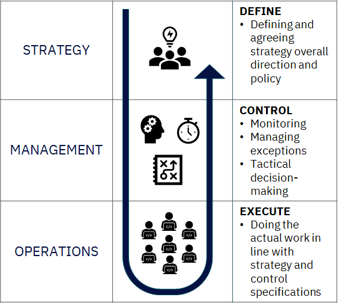
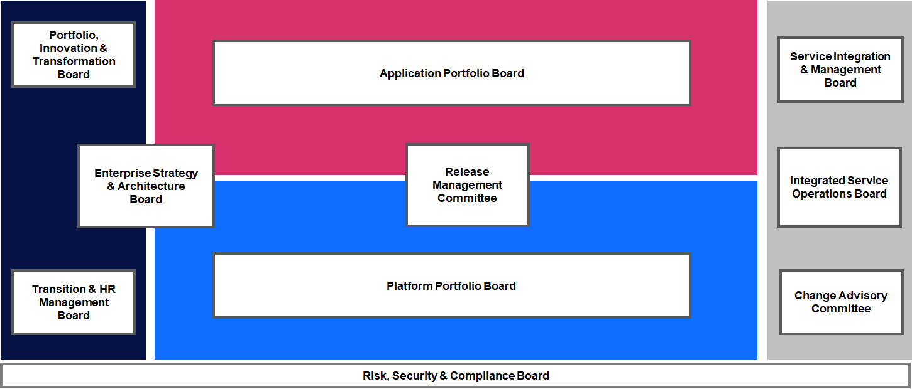
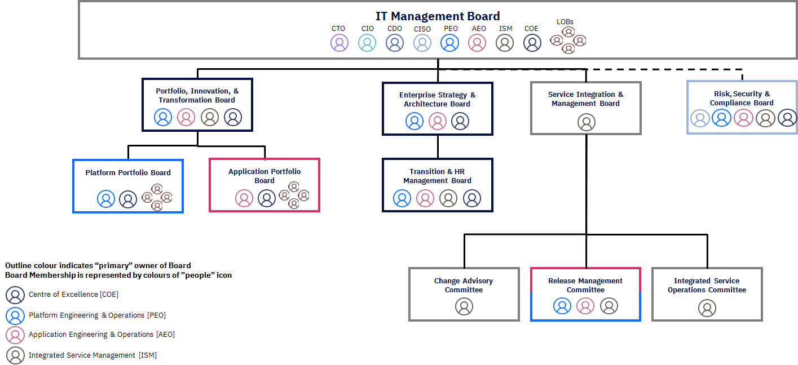
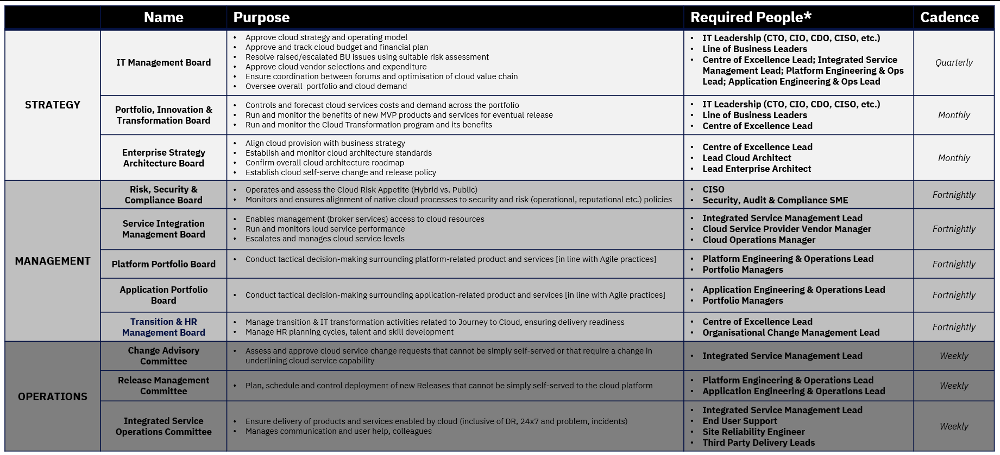

Manage and control without inhibiting agility & flexibility
Overview
The modern Cloud Strategy Operating Model Governance model ensures that all four of its IT elements (i.e. Cloud Centre of Excellence, Application Engineering & Operations, Platform Engineering & Operations, and Integrated Service Management) play an integral part in the successful delivery and realisation of strategic initiatives, enabled through IT cloud capabilities and services.
| Governance |
|---|
|  |
This document describles the necessary forums that are required to determine how:
- Digital products and services are being adopted and used via standardised frameworks and services.
- Operations of capabilities and services are performing.
The Governance model will span across three accountability levels i.e. Strategy, Management and Operations — and will include board level decisions in Exec Committees through to day-to-day management decisions, which will in turn drive Operational delivery. An accountability level characterises the scope and intent of the activity and decision-making.
This cuts across all four IT Elements of a modern operating model.
| Governance Pillars |
|---|
|  |
Structured within a hierarchical model, each governing Board or Committee adds distinct value to the Enterprise:
| Governance Structure |
|---|
|  |
But how does this work in practice?
| Governance Boards |
|---|
|  |
“Good” governance model is comprised of four main component:
- Structure
- Active Oversight Responsibilities
- Talent & Culture
- Infrastructure
Structure
- Outlines board and management committee structures, mandates, membership, and charters
- Establishes design of governance framework
- Delineates organizational structure, reporting lines, and relationships
- Highlights roles and independence of control and support functions from business owners
Active Oversight Responsibilities
- Outlines the type of committees (board and management) and associated responsibilities
- Specifies functional accountabilities for day-to-day management of business practices across the enterprise
- Delineates board and management policies supporting delegation of authority (decision rights) including reporting, escalation, and veto rights
Talent & Culture
- Aligns governance with operating and business principles
- Articulates core beliefs and foundation for culture
- Highlights characteristics of risk culture
- Outlines leadership success, assessment, and development responsibilities
- Aligns performance management, approach, measures and responsibilities to compensation and incentive plans
Infrastructure
- Establishes design and content of policy manuals and associated procedures
- Outlines type and frequency of internal reporting and communications
- Defines scorecards, measures, and metrics to track performance
- Aligns technology and governance requirements